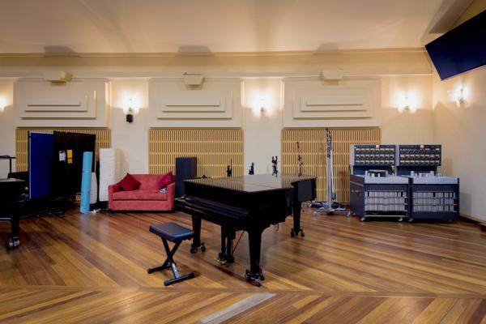

Nossa história
Este estúdio foi criado de maneira curiosa. Em 1958, Tutti Camarata ocupava o cargo de Diretor de Gravação da Disney, e precisava de um lugar para gravar as trilhas de seus filmes, como ‘Mary Poppins’ e ‘101 Dálmatas’. A partir daí, ganhou fama e novos adeptos da música, que hoje completam a lista de álbuns icônicos, discos de ouro e platina do estúdio. Elton John, Led Zeppelin, Prince, Beach Boys e Rolling Stones são alguns dos artistas que deixaram sua marca histórica no local.
